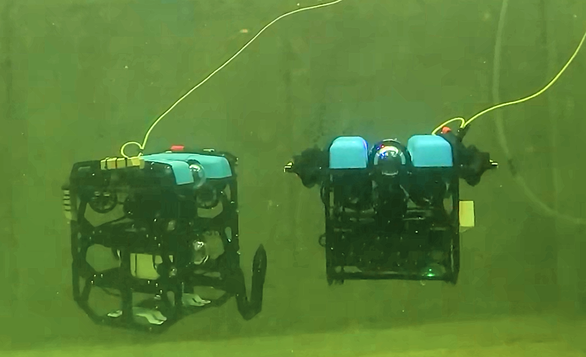
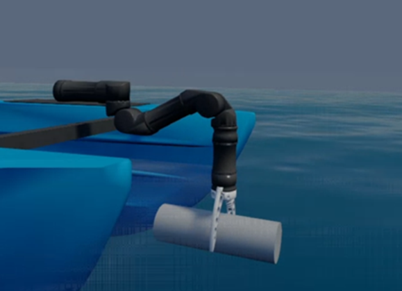
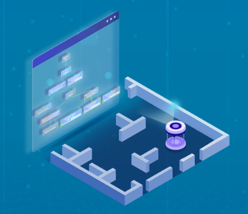
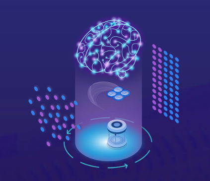
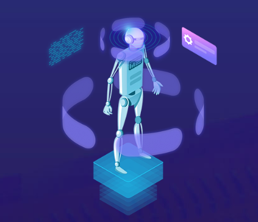
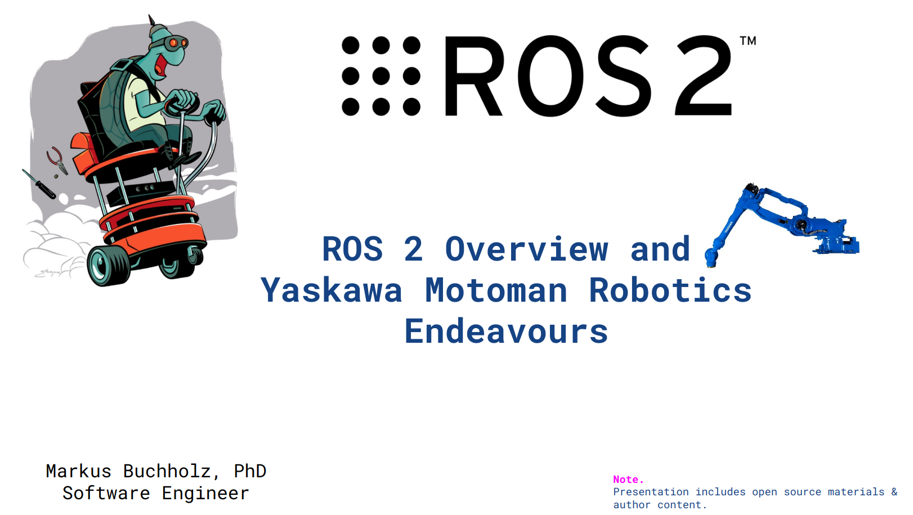
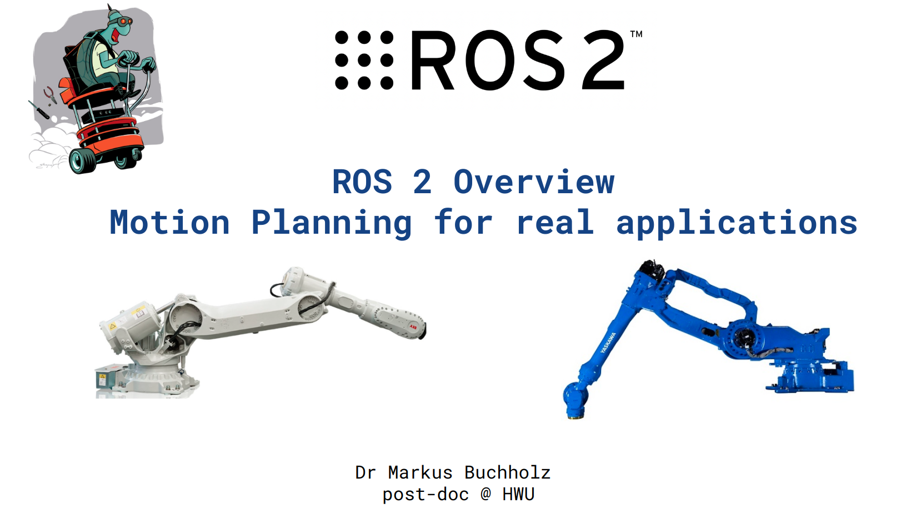
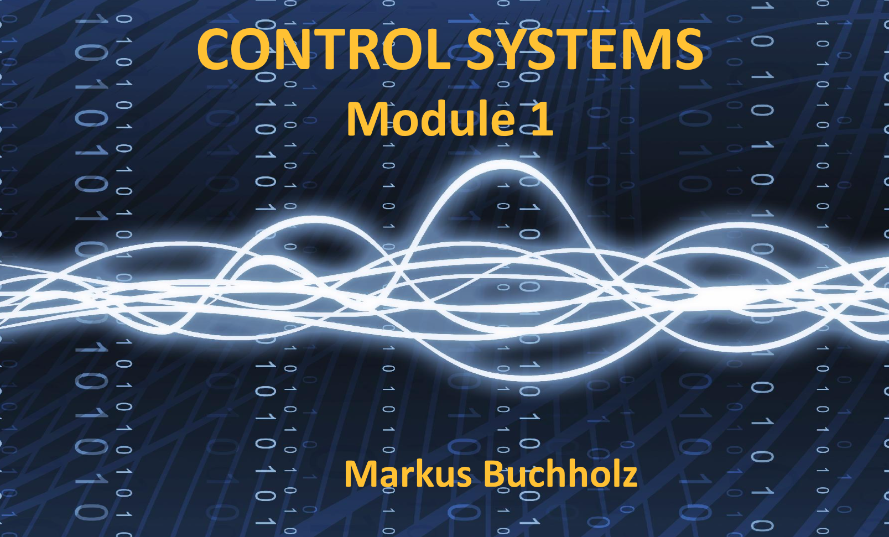
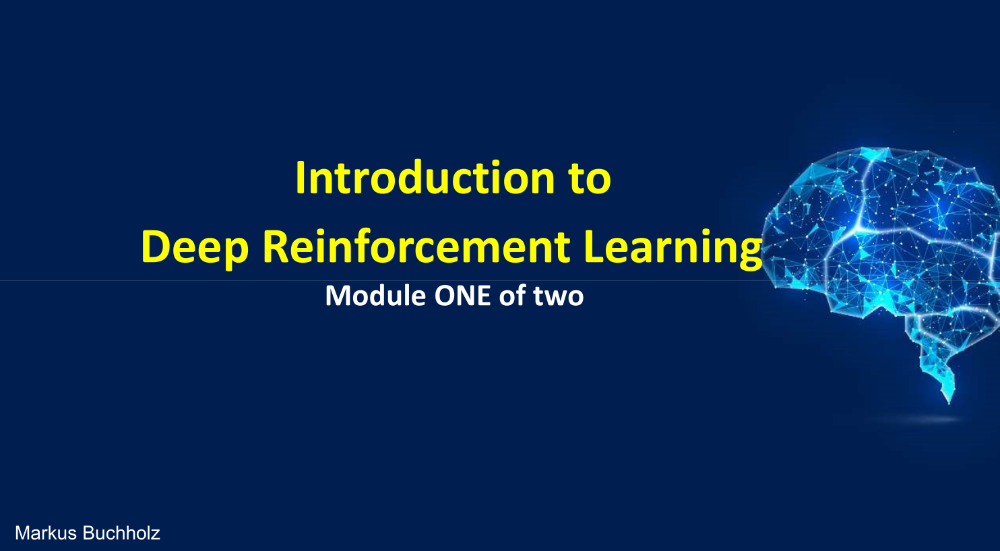

This BSc thesis project explored how Large Language Models can generate behaviour trees for autonomous underwater missions. The student built a pipeline where the LLM translates high-level human intent into executable robot behaviours, validates feasibility against the vehicle's capabilities, and deploys the resulting tree first in the StoneFish simulator and then on real hardware. The work sits at the cutting edge of LLM-driven robot task planning for marine robotics.

This MSc thesis developed an end-to-end waste-collection pipeline for maritime environments. A robotic arm mounted on the BlueBoat ASV detects floating debris through a vision system, navigates toward it, and performs precise pick-up maneuvers. The project integrates perception, motion planning, and low-level control into a coherent autonomous system, demonstrating how marine robots can be applied to environmental monitoring and cleanup.

Behaviour trees are one of the most practical ways to structure complex robot decision-making. In this course, I teach the fundamentals of behaviour-tree design, show how to implement them in real ROS 2 systems, and walk through patterns that scale from simple demos to production-grade autonomy stacks.

Reinforcement learning is reshaping how robots learn skills, but moving from theory to a working ROS robot is hard. This course bridges that gap: I cover core RL concepts and guide students through hands-on coding exercises and simulations inside ROS, so they can train, evaluate, and deploy learning-based behaviours on real robot platforms.

This course introduces machine learning and AI concepts directly through robotics problems. Students learn how robots perceive, decide, and act autonomously, using Python to implement algorithms that make robots smarter, more adaptive, and better collaborators with humans. It is designed for learners who want to understand intelligence from the perspective of embodied systems.

An industrial training session I delivered to Yaskawa software and application engineers, introducing the ROS 2 ecosystem and how it integrates with modern manipulators. The presentation translates academic robotics middleware into practical concepts for production robot development.

A lecture I gave for the Robotics Systems Science course at Heriot-Watt University, covering ROS 2 fundamentals and motion-planning methods for real robotic applications. The material connects classroom theory with the software stacks used in current research and industry.

Beyond formal teaching, I write a technical blog on Medium with over 100 articles covering control theory, robotics, physics simulation, and programming - from LQR and model-predictive control to shallow-water equation modeling, multi-agent navigation, and C++/ROS 2 implementation walkthroughs. Every article ships with runnable code, aimed at readers who want to go from concept to working simulation.

An introductory to intermediate course covering the core principles of control theory and system dynamics, tailored specifically for robotics applications, which I designed and taught at Canrig Robotics. The curriculum takes you from fundamental concepts - such as open vs. closed-loop systems, LTI dynamics, and differential equations - to practical tools like Fourier analysis and Laplace transforms. You'll explore first- and second-order system dynamics (e.g., robot joint models), evaluate stability using Bode plots and Nyquist criteria, and learn practical controller and filter design (such as Notch filters) to handle system delays and noise. To make the theoretical concepts practical and intuitive, all course topics are paired with interactive, runnable Python code shared via Google Colab.

An introductory course exploring the core principles of machine learning, deep learning, and reinforcement learning tailored for robotics and autonomous decision-making, which I designed and taught at Canrig Robotics. The curriculum introduces fundamental machine learning paradigms before diving deep into reinforcement learning, covering Markov Decision Processes (MDPs), policy optimization, Bellman equations, Q-learning, and value function approximation. Additionally, it covers neural network architectures, activation functions, and practical implementation software stacks like TensorFlow and Keras used for training deep learning models.
